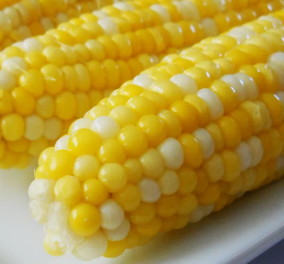

Sweet Corn on the Comb
Ingredients
-
2 tablespoons white sugar
-
1 tablespoon lemon juice
-
6 ears corn on the cob, husks and silk removed
Directions
-
Fill a large pot about 3/4 full of water and bring to a boil.
Stir in sugar and lemon juice until sugar is dissolved.
-
Gently place ears of corn into boiling water, cover the pot,
turn off the heat, and let corn cook in the hot water until tender, about 10 minutes.
Hope it's to your liking
